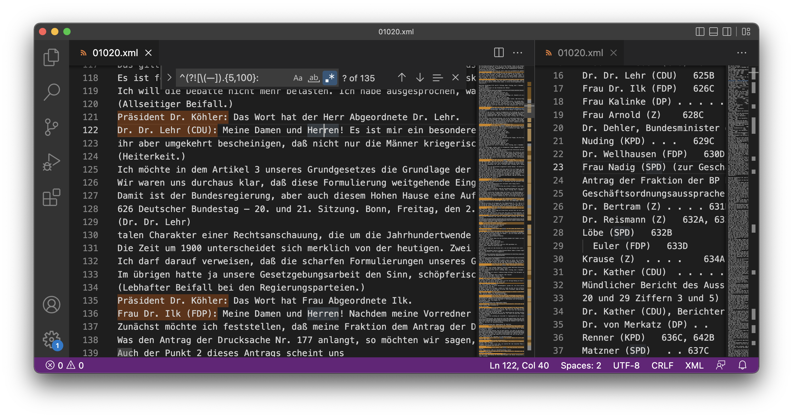

3.3 Erstellung des Goldstandard-Korpus
Contents
3.3 Erstellung des Goldstandard-Korpus#
In dem Annotationsprozess wurden alle Redebeiträge in den XML-Protokollen annotiert und mit einer Redner:innen-ID versehen. Als Datengrundlage dienten dabei die XML-Rohdaten des Bundestags, sie ist also identisch mit den Daten, mit denen das OP-Korpus erstellt wurde. Der Prozess gliedert sich in fünf Schritte:
Extraktion der Sitzungsmetadaten (automatisiert)
Einteilung in Inhaltsverzeichnis, Sitzungsverlauf und Anhang (teilautomatisiert)
Tagging der Redebeiträge, ausgenommen Zwischenrufe (manuell)
Extraktion und Matching der Redner*innen (teilautomatisiert)
Vergleich des OP- und Goldstandard-Korpus (teilautomatisiert)
Für alle Redebeiträge wurde analog zum OP-Korpus der Vor- und Nachname, die Funktion und Fraktion des:der Sprecher:in extrahiert sowie (sofern vorhanden) mit der Stammdaten-ID gematched. Dies geschah in einem überwachten, automatisierten Prozess. In einer Reihe von Fällen mussten die Redebeiträge manuell zugeordnet werden, wenn die Zuordnung nicht eindeutig war. In diesem Kontext wurden den Redner:innen Informationen wie Parteizugehörigkeit und Funktionsgruppe sowie spezielle Identifikatoren - QIDs und GND-IDs - zugeordnet. QIDs sind eindeutige Identifikatoren von Wikipedias Wikidata, während GND-IDs von der Gemeinsamen Normdatei stammen, einem Normdaten-Standard in Bibliotheken. Beide Kennungen fungieren hier als eindeutige Bezeichner für Personen und erleichtern präzise Datenverknüpfungen über das Korpus hinaus.
Dabei wurde keine Inter-Annotator-Bewertung durchgeführt, es haben also nicht mehrere Personen das Korpus unabhängig voneinander annotiert und deren Ergebnisse dann verglichen, sondern es fand eine Annotation statt die zweimal vollständig überprüft wurde.[1] Die Ambiguität der Annotation („Ist das Fragment ein Redebeitrag?“) war in diesem Fall quasi nicht vorhanden, da eine klare Struktur vorliegt.
3.3.1 Metadatenextraktion & Dokumentengliederung#
Die Protokolle wurden im ersten Schritt mit den Meta-Daten zu Ort, Datum, Beginn- und Enduhrzeit versehen und mit XML-Tags in Inhaltsverzeichnis, Hauptteil und Schluss gegliedert, beides angelehnt an das DTP-XML-Format des Bundestags ab der 19. Periode. Bei dem Protokoll 01020, das im XML auch den Text des Folgeprotokolls beinhaltet, wurde dieser entsprechend gelöscht.
3.3.2 Tagging der Redebeiträge#
Im Hauptteil wurde jeder Redebeitrag in ein XML-Tag „verpackt“. Insbesondere Redebeiträge durch die (Vize-)Präsident:innen können dabei mehrere Tagesordnungspunkte überspannen. Dies ist abweichend von den modernen XML-Dokumenten der 19. und 20. Periode. Diese ordnen die Redebeiträge nach Tagesordnungspunkten, dagegen entspricht die hier genutzte Variante der OP-Modellierung und ähnelt den gedruckten Dokumenten, da diese ebenfalls keinen neuen Redebeitrag einleiten (dies geschähe jeweils mit der Nennung der Redner:in). Der Hauptteil sieht dann beispielhaft folgendermaßen aus (03018):
<sitzungsverlauf>Deutscher Bundestag — 3. Wahlperiode — 18. Sitzung. Bonn, Donnerstag, den 20. März 1958 823
18. Sitzung
Bonn, den 20. März 1958
Stenographischer Bericht
Beginn: 9.03 Uhr.
<red>
Präsident D. Dr. Gerstenmaier: Die Sitzung ist eröffnet.
Vor Eintritt in die Tagesordnung darf ich unserer Kollegin Frau Dr. h. c. Weber die Glückwünsche des Hauses aussprechen. Zum wievielten Geburtstag, sage ich nicht.
(Heiterkeit und Beifall.)
[...]
</red>
<red>
Dr. Gradl (CDU/CSU) : Herr Präsident! Meine Damen und Herren! Die Fraktion der Christlich-Demokratischen und Christlich-Sozialen Union hat am 27. Februar eine Große Anfrage an die Bundesregierung gerichtet. [...]
</red>
[...]
</sitzungsverlauf>
Bei der Annotation stand die Abgrenzung der Redebeiträge im Vordergrund. Absätze nach dem öffnenden und schließenden <red>-Tag wurden dabei entfernt, da diese für die weitere Verarbeitung keine Relevanz hatten. Kopfzeilen wurden nicht entfernt oder getaggt und Zwischenrufe nicht ausgezeichnet.
Die 36 ausgewählten Dokumente wurden händisch annotiert, dann ein zweites Mal manuell vollständig durchgearbeitet und im dritten Schritt nochmals mithilfe einer Plausibilitätsprüfung der extrahierten Metadaten des:der Sprecher:in überprüft. Zuletzt wurde ein Machine-Learning-Modell für die Überprüfung eingesetzt.
Die Annotation wurde in Visual Studio Code durchgeführt, dabei wurde mit der Suchfunktion das RegEx-Muster ^(?![\(—]).{5,100}: gesucht, um es als Markierung zu nutzen.
 Abbildung 2: Darstellung der Nutzung eines RegEx-Musters für die Hervorhebung möglicher Redebeitrags-Anfänge im Annotationsprozess in Visual Studio Code.
Der Beginn einer Rede ist fest vorgegeben, grundsätzlich steht in der ersten Zeile der Name und ggf. die Position der Person gefolgt von einem Doppelpunkt. Dies wird durch den zweiten Teil des RegEx-Musters repräsentiert: .{5,100}:, dies findet Zeichenketten mit der Länge 5 - 100 die ein Doppelpunkt abschließt. Der erste Teil des Suchmusters, ^(?![\(—]), findet nur Zeichenketten, die an einem Zeilenanfang anfangen. Es entstehen jedoch keine Matches, wenn die Zeile mit einer Klammer oder einem Bindestrich beginnt, beides Zeichen, die einen Zwischenruf einleiten. Diese RegEx-Regel führt auch zu Matches, die eigentlich keine neuen Redebeiträge darstellen, sondern beispielsweise Zitate innerhalb einer Rede oder schlicht Sätze mit Doppelpunkten sind. Dies wird im Annotations-Prozess validiert, der Vorteil ist, dass viele Spezialfälle nicht fälschlich durch ein zu enges Muster verloren gehen. In Kombination mit dem konstanten Abgleich mit dem Inhaltsverzeichnis können so sehr effizient die Redebeiträge annotiert werden:
Die 36 Dokumente enthalten damit 7532 manuell getaggte Redebeiträge, also durchschnittlich 209 Redebeiträge je Protokoll. Dies betrifft nicht nur Reden, sondern auch alle Zwischenfragen und Moderationsbeiträge; nicht inkludiert sind Zwischenrufe.
3.3.3 Extraktion & Matching Redner:innen#
Für alle Redebeiträge wird in diesem Kapitel, analog zu den OP-Daten, der Vor- und Nachname, die Funktion und Fraktion extrahiert und die Redner:innen mit ihrer ID aus den Bundestags-Stammdaten gematcht. Als zusätzliche Identifier werden noch die QIDs und GND-IDs den Redner:innen zugeführt. Erstere bietet den Vorteil, dass für alle Redner:innen, also auch Vertreter:innen der Bundesregierung und des Bundesrats, die nicht selbst Abgeordnete des Bundestags sind, ein eindeutiger Identifier vorliegt; dies ist in den OP-Daten nicht gegeben. Daneben sind als Zusatzinformationen auch die Funktionsgruppe (Abgeordnete, Sitzungsvorstand, Bundesregierung, Bundesrat) und die Partei angegeben. Hier das Ziel als beispielhafter XML-Ausschnitt aus 01020:
<red first_name="Erich" last_name="Köhler" group="" party="CDU" position="Präsident" position_group="Sitzungsvorstand" id="11001150" GND="129496901" QID="Q70058">
Präsident Dr. Köhler: Das Wort hat der Herr Abgeordnete Dr. Lehr.
</red>
<red first_name="Robert" last_name="Lehr" group="CDU/CSU" party="CDU" position="Abgeordnete:r" position_group="Abgeordnete:r" id="11001304" GND="118727206" QID="Q66628">
Dr. Dr. Lehr (CDU): Meine Damen und Herren! Es ist mir ein besonderer Vorzug, der verehrten Kollegin Dr. Weber selbst da in allen Teilen zustimmen zu können, wo sie ihre Zweifel an der Bonität des Männerstaates geäußert hat. [...]
</red>
Allgemein wird die Funktion der Person direkt aus dem Text extrahiert, für Abgeordnete wird diese auf Basis des Vorhandenseins einer Fraktions-/Gruppen-Angabe gesetzt. Es werden vier Positionsgruppen vergeben, dabei jeweils nur diejenige Position, in der die Person sprach: Sitzungsvorstand, Abgeordnete:r, Bundesregierung und Bundesrat. Der Sitzungsvorstand bezieht sich auf (Vize-)Präsident:innen des Bundestags. In den ersten beiden Perioden kann hier der:die Schriftführer:in enthalten sein. Alle Vertreter:innen des Sitzungsvorstands sind immer auch Abgeordnete. Mitglieder der Bundesregierung sind in der Regel ebenfalls Abgeordnete; neben den eigentlichen Bundesregierungsmitgliedern (Kanzler:in und Minister:innen), können Staatssekretäre die Bundesregierung vertreten; deshalb wird ihnen in diesen Instanzen „Bundesregierung“ als Gruppe zugewiesen. Eine fünfte mögliche Gruppe kommt in dem Goldstandard-Korpus nicht vor und spricht allgemein nur sehr selten: der Bundespräsident. Auch echte Gast-Redner:innen, wie in Kapitel zwei geschildert, kommen im Goldstandard-Korpus ebenfalls nicht vor.
Bis einschließlich zur 11. Bundestagsperiode wurde nur der Nachname des:der Redner:in sowie je nachdem, ob die Person Abgeordnete:r, Teil der Sitzungsleitung oder der Bundesregierung war, die Fraktion oder Funktion angegeben. Bei Abgeordneten, deren Nachnamen in dieser Periode und Fraktion mehrmals vorkamen, wurde zusätzlich noch der Ort angegeben. Dass bei Frauen bis zur 11. Periode ein „Frau“ vorangestellt wurde, kann wie die weiteren Informationen zur Filterung für das Personen-Matching genutzt werden. Bei Bedarf kann auch der jeweilige Name zu dem Redezeitpunkt (relevant bei Nachnamens-Veränderungen) noch in die Filterung einfließen.
In diesem Prozess wird besonderer Wert auf Überprüfungen und das Erkennen von Anomalien gelegt und in einer Reihe von Fällen werden die Redebeiträge manuell zugeordnet. Letzteres ist beispielsweise notwendig, da die Stammdaten zwar Namensänderungen modellieren können, die Parteizugehörigkeit dagegen unveränderbar ist und nur die letzte Partei angegeben ist. Gerade in den ersten Perioden gibt es jedoch viele Parteiübertritte, wie auch in den letzten vorliegenden Perioden beispielsweise von der CDU zur AfD.
Dies könnte wie die eigentliche Auszeichnung händisch passieren, hierbei ist jedoch das Fehlerpotenzial sehr hoch, eine kontrollierte automatisierte Verarbeitung ist schneller und von besserer Qualität. Für diesen Prozess sind die nachfolgenden Schritte notwendig. Diese sind jedoch nicht nacheinander abgeschlossen, sondern wurden im Entwicklungsprozess iterativ verbessert und überprüft:
Erstellung Abgeordneten-Tabelle
Erstellung ID-Tabelle aller Abgeordneter, Regierungsmitglieder & Bundesratsmitglieder
Rede-Matching und Anreicherung XML-Dateien
3.3.3.1 Erstellung Abgeordneten-Tabelle#
Analog zum OP-Korpus werden für den ersten Schritt die Abgeordneten aus den Stammdaten des Bundestags extrahiert:
import pandas as pd
from lxml import etree
import datetime
# Parsen der Stammdaten-XML-Datei
root = etree.parse('../data/raw/MDB_STAMMDATEN.XML').getroot()
# Anlegen des Dataframes für die Politiker:innen
mdbs_columns = ["id", "first_name", "last_name", "gender", "date_of_birth", "place", "party", "periods", "since", "until"]
mdbs = pd.DataFrame(columns=mdbs_columns)
Nachdem die Daten geparst wurden und die Dataframe-Struktur angelegt ist, wird über alle MDB-Tags in den Stammdaten iteriert und die grundsätzlichen Daten extrahiert: ID, Geburtstag, Partei und Geschlecht.
Für jede:n Abgeordnete:n wird eine Liste aller Perioden erstellt, in denen er oder sie im Bundestag waren. Hiermit wird im Matching-Schritt verhindert werden, dass Fehlmatches von Personen mit dem gleichen Namen geschehen, die in einer anderen Periode im Bundestag saßen.
Zuletzt wird über alle Namen der Person iteriert, innerhalb des <NAMEN>-Tags in der XML-Datei sind die Tags <NACHNAME>, <VORNAME>, <ORTSZUSATZ>, <ADEL>, <ANREDE_TITEL>, <AKAD_TITEL>, sowie zur Auszeichnung der Namens-Gültigkeit <HISTORIE_VON> und <HISTORIE_BIS>. Bei vielen Abgeordneten gibt es hier nur einen einziges <NAME>-Tag in den <NAMEN>, aber bei allen Abgeordneten, bei den sich Nachname beispielsweise durch Heirat, der Ortzusatz durch Umzug (dieser wird nur angegeben, wenn es mehrere Personen mit dem gleichen (Nach-)Namen in der Periode und Partei gibt) oder der Anrede-Titel durch Promotion oder Titelentzug verändert hat, gibt es hier mehrere Einträge.
Besonderes Augenmerk wird an dieser Stelle auf die Zusammensetzung der Nachnamen von Menschen Nachnamen ehemaliger Adelsgeschlechter gelegt. Diese werden in den Stammdaten abweichend vom deutschen Namensrecht nicht als Teil des Nachnamens hinterlegt. Stattdessen sind sie aufgeteilt in den historischen Adelstitel und Präfix, in den Stammdaten sieht das folgendermaßen aus:
<NAME>
<NACHNAME>Guttenberg</NACHNAME>
<VORNAME>Karl-Theodor</VORNAME>
<ORTSZUSATZ/>
<ADEL>Frhr.</ADEL>
<PRAEFIX>zu</PRAEFIX>
<ANREDE_TITEL>Dr.</ANREDE_TITEL>
<AKAD_TITEL>Dr.</AKAD_TITEL>
<HISTORIE_VON>08.05.2007</HISTORIE_VON>
<HISTORIE_BIS>23.02.2011</HISTORIE_BIS>
</NAME>
Für jede Änderung im Bereich des <NAMEN>-Tags wird eine Zeile in der Tabelle der Politiker:innen erstellt, für die Zeilen in der Tabelle gibt es also keinen Primärschlüssel, jede ID kann mehrmals vorkommen:
for mdb in root:
if mdb.tag == 'MDB':
mdb_id = mdb[0].text
date_of_birth = datetime.datetime.strptime(mdb[2][0].text, '%d.%m.%Y').date()
gender = mdb[2][4].text
party = mdb[2][8].text
#
mdb_temp = pd.DataFrame(columns=mdbs_columns)
period = []
for periode in mdb[3]:
period.append(periode[0].text)
for name in mdb[1]:
# Zusammensetzung historischer Adelstiteln in den Stammdaten
imagined_adel = ""
# Nur Titel, z.B. "Graf Lambsdorf" oder Titel und Präfix z.B. "Graf von Guttenberg"
if name[3].text is not None:
imagined_adel = ' '.join([name[3].text, name[4].text]) if (
name[3].text is not None and name[4].text is not None) else name[3].text
# Nur Präfix, z.B. "von Notz"
elif name[4].text is not None:
imagined_adel = name[4].text
last_name = ' '.join([imagined_adel, name[0].text]) if (imagined_adel != "") else name[0].text
date_since = datetime.datetime.strptime(name[7].text, '%d.%m.%Y').date() if name[7].text is not None else datetime.datetime.strptime(
"1949-01-01", '%Y-%m-%d').date()
date_until = datetime.datetime.strptime(name[8].text, '%d.%m.%Y').date() if name[8].text is not None else datetime.datetime.now().date()
# Falls kein Ablaufdatum (HISTORIE_BIS) im vorherigen Namenstag gesetzt worden ist
if len(mdb_temp) > 0:
if mdb_temp.loc[mdb_temp.index[-1], 'until'] == datetime.datetime.now().date():
mdb_temp.loc[mdb_temp.index[-1], 'until'] = date_since
# Infos an temporäre Tabelle anhängen
mdb_temp = pd.concat([mdb_temp, pd.DataFrame([[mdb_id, name[1].text, last_name, gender, date_of_birth,
name[2].text, party, period, date_since, date_until]],
columns=mdbs_columns)], ignore_index=True)
# Tabelle der Politiker:innen mit den Einträgen aktualisieren
mdbs = pd.concat([mdbs, mdb_temp], ignore_index=True)
mdbs
| id | first_name | last_name | gender | date_of_birth | place | party | periods | since | until | |
|---|---|---|---|---|---|---|---|---|---|---|
| 0 | 11000001 | Manfred | Abelein | männlich | 1930-10-20 | None | CDU | [5, 6, 7, 8, 9, 10, 11] | 1965-10-19 | 2023-06-30 |
| 1 | 11000002 | Ernst | Achenbach | männlich | 1909-04-09 | None | FDP | [3, 4, 5, 6, 7] | 1957-10-15 | 2023-06-30 |
| 2 | 11000003 | Annemarie | Ackermann | weiblich | 1913-05-26 | None | CDU | [2, 3, 4] | 1953-10-06 | 2023-06-30 |
| 3 | 11000004 | Else | Ackermann | weiblich | 1933-11-06 | None | CDU | [11, 12] | 1990-10-03 | 2023-06-30 |
| 4 | 11000005 | Ulrich | Adam | männlich | 1950-06-09 | None | CDU | [12, 13, 14, 15, 16] | 1990-12-20 | 2023-06-30 |
| ... | ... | ... | ... | ... | ... | ... | ... | ... | ... | ... |
| 4638 | 11005266 | Nicolas | Zippelius | männlich | 1987-08-01 | None | CDU | [20] | 2021-10-26 | 2023-06-30 |
| 4639 | 11005267 | Armand | Zorn | männlich | 1988-07-18 | None | SPD | [20] | 2021-10-26 | 2023-06-30 |
| 4640 | 11005268 | Katrin | Zschau | weiblich | 1976-06-09 | None | SPD | [20] | 2021-10-26 | 2023-06-30 |
| 4641 | 11005273 | Claudia | Raffelhüschen | weiblich | 1968-11-07 | None | FDP | [20] | 2021-10-26 | 2023-06-30 |
| 4642 | 11005289 | Clara | Bünger | weiblich | 1986-07-04 | None | DIE LINKE. | [20] | 2022-01-05 | 2023-06-30 |
4643 rows × 10 columns
len(mdbs.id.unique())
4366
Die Tabelle enthält mit den Stammdaten des Bundestags mit dem Stand 7. April 2022 damit 4643 Einträge, diese verteilen sich auf 4366 Abgeordnete.
# Exportieren
mdbs.to_feather("../data/evaluation/matching_data/mdbs.feather")
3.3.3.2 Erstellung ID-Tabelle aller Abgeordneter, Regierungsmitglieder & Bundesratsmitglieder#
Im OP-Korpus gibt es viele Redner:innen, die als Gäste ausgezeichnet sind, diese haben zusätzlich häufig auch keine ID-Zuweißung. Etwas, das vor allem Staatssekretär:innen und -Minister:innen betrifft. In dem Goldstandard-Korpus soll jedoch für alle Redner:innen ein eindeutiger Identifier existieren und tatsächlich gibt es für alle Sprecher:innen in der Stichprobe eine Wikipedia-QID. Diese wird in dem Testdatensatz entsprechend als eindeutiger Identifier genutzt. Daneben werden auch alle Redebeiträge, soweit diese für die Sprecher:in vorliegen, mit dem der Stammdaten-ID und der GND (Gemeinsame Normdatei) annotiert.
Für diese ID-Tabelle gibt es zwei Datenquellen: Eine SPARQL-Wikidata-Abfrage, die alle in Wikidata hinterlegten Bundestagsmitglieder abfragt und daneben eine Wikidata-Abfrage für eine händisch erstellte Liste von 48 Politiker:innen und ihrer QID, die in den Testdaten vorkommen, jedoch entweder nicht Abgeordnete sind oder bei deren Abfrage Probleme vorlagen.
# Bibliothek zur Arbeit mit Wikidata SPARQL
from SPARQLWrapper import SPARQLWrapper, JSON
# Import der händisch erstellten QID-Tabelle von Politiker:innen
non_mdbs = pd.read_csv("../data/evaluation/matching_data/government_politicians_qid.csv")
Für die Abfrage gibt es die Funktion get_pol_info(), die auf Basis einer SPARQL-Abfrage ein Dataframe mit der Antworten zurückgibt:
def get_pol_info(query):
sparql = SPARQLWrapper("https://query.wikidata.org/sparql")
sparql.setQuery(query)
sparql.setReturnFormat(JSON)
# Umwandlung in ein Dataframe
results = sparql.query().convert()
table_sparql = pd.json_normalize(results['results']['bindings'])
# Modellierung des Dataframes basierend auf den Antwortspalten
columns_dict = {
"subjLabel.value": "full_name", "birthNameLabel.value": "birth_name", "date.value": "date_of_birth",
"genderLabel.value": "gender", "subj.value": "qid", "gnd.value": "gnd", "partyShort.value": "party"
}
columns_copy = [column for column in table_sparql.columns if columns_dict.get(column, "") != ""]
table_sparql = table_sparql[columns_copy].copy()
table_sparql.columns = [columns_dict.get(column, "") for column in table_sparql.columns]
# Extrahierung der QID aus der Wikidata-URL (verbesserungswürdig)
replace_qid = lambda m: m.group('qid')
table_sparql.qid = table_sparql.qid.str.replace(r"^.*(?P<qid>Q.*)", replace_qid, regex=True)
# Umwandlung des Geburtstags-Datumsformats
if "date_of_birth" in table_sparql.columns:
table_sparql.date_of_birth = pd.to_datetime(table_sparql.date_of_birth).dt.date
# Anfügen eines leeren GND-Felds, sofern dieses fehlt
if "gnd" not in table_sparql.columns:
table_sparql["gnd"] = ""
# Anfügen eines leeren Partei-Felds, sofern dies fehlt / in dieser Version aus Modellierungsgründen nicht enthalten
if "party" not in table_sparql.columns:
table_sparql["party"] = ""
return table_sparql
Mit dieser Funktion werden die Abgeordneten von Wikidata abgerufen um ihre QID zu erhalten:
sparql_mdb_query = """
SELECT Distinct ?subjLabel ?birthNameLabel ?genderLabel ?date ?subj ?gnd
WHERE
{
?subj wdt:P39 wd:Q1939555 .
OPTIONAL { ?subj wdt:P1477 ?birthName . }
OPTIONAL { ?subj wdt:P21 ?gender . }
OPTIONAL { ?subj wdt:P569 ?date . }
OPTIONAL { ?subj wdt:P227 ?gnd . }
SERVICE wikibase:label { bd:serviceParam wikibase:language "de" }
}
"""
politician_sparql = get_pol_info(sparql_mdb_query)
Das Matching der Stammdaten-ID mit der QID läuft weitgehend automatisch, bei 14 der über 4000 Politiker:innen muss das Matching jedoch manuell erfolgen:
match_dict = {
"11000454": "Q2502436", # Ursula Eid
"11001833": "Q102456", # Nazi Franz Richter / Fritz Rößler
"11002016": "Q69677", # Renate Schmidt
"11002078": "Q2530", # Gerhard Schröder
"11003023": "Q71359", # Annegret Kramp-Karrenbauer
"11003733": "Q106497", # Hüseyin-Kenan Aydin
"11004106": "Q109309", # Agnes Malczak
"11004157": "Q1045675", # Carsten Sieling
"11004167": "Q76658", # Frank-Walter Steinmeier
"11004176": "Q61386", # Wolfgang Tiefensee
"11004445": "Q109375", # Oliver Wittke
"11004837": "Q40998599", #Zaklin Nastic
"11004972": "Q108179918", # Zeki Gökhan
"11005059": "Q108738246", # Schahina Gambir
"11005289": "Q110421439" # Clara Bünger
}
Auf Basis der manuellen QID wird noch mal eine SPARQL-Abfrage gesendet, hierfür gibt es die folgende Funktion get_pol_by_qid, die auf Basis der QID die Informationen zurückgibt. Diese wird in einem späteren Schritt auch für die Nicht-Abgeordneten benötigt:
def get_pol_by_qid(manual_match):
sparql_query = """SELECT Distinct ?subjLabel ?birthNameLabel ?genderLabel ?date ?subj ?gnd
WHERE
{{
BIND(wd:{} AS ?subj).
OPTIONAL {{ ?subj wdt:P1477 ?birthName . }}
OPTIONAL {{ ?subj wdt:P21 ?gender . }}
OPTIONAL {{ ?subj wdt:P569 ?date . }}
OPTIONAL {{ ?subj wdt:P227 ?gnd . }}
SERVICE wikibase:label {{ bd:serviceParam wikibase:language "de" }}
}}""".format(manual_match)
pol_sparql = get_pol_info(sparql_query)
return pol_sparql
Die ID-Tabelle, die später für die XML-Anreicherung zusammen mit der Tabelle der Abgeordneten genutzt wird, benötigt entsprechend die Spalten der Stammdaten-ID (hier mdb_id), die GND, die QID und den vollen Namen. Letzteres als Schlüssel für das Matching von Nicht-Abgeordneten:
politician_identifier_columns = ["mdb_id", "gnd", "qid", "full_name"]
politician_identifier = pd.DataFrame(columns=politician_identifier_columns)
Für das automatisierte Matching der Bundestags-ID mit der QID wird über das Dataframe der Abgeordneten iteriert. Der Algorithmus versucht dabei, die Abgeordneten mithilfe ihres Geburtstags und Namens zu matchen. Dabei kümmert der Code sich um bestimmte Sonderfälle wie manuellen Matches oder Abgeordnete, bei denen der vollständige Name nicht identisch mit den Wikidata-Daten ist.
for index, mdb in mdbs.iterrows():
full_name = " ".join([mdb.first_name, mdb.last_name])
manual_match = match_dict.get(mdb.id,"")
# Falls kein manueller Match vorliegt, werden potenzieller Matches auf Basis des Geburstags und vollen Namens gesucht
if manual_match == "":
potential_matches_birth = politician_sparql[politician_sparql.date_of_birth == mdb.date_of_birth]
potential_matches = potential_matches_birth[potential_matches_birth.full_name == full_name]
else:
potential_matches = politician_sparql[politician_sparql.qid == manual_match]
if len(potential_matches) < 1:
potential_matches = get_pol_by_qid(manual_match)
# Falls nach dieser Filterung keine potenziellen Matches passiert sind wird nur auf Basis des letzten Nachname-Worts gemacht
if len(potential_matches) < 1:
potential_matches = potential_matches_birth[potential_matches_birth.full_name.str.contains(full_name.split()[-1], regex = False)]
# Sofern auch dadurch kein Match erzeugt wurde, wird auf Basis des Vornamens gematched
if len(potential_matches) < 1:
potential_matches = potential_matches_birth[(potential_matches_birth.full_name.str.contains(full_name.split()[0])) |
(potential_matches_birth.birth_name.str.contains(full_name.split()[0]))]
# Falls es zuviele potenzielle Matches gibt, aber alle die gleiche QID haben, also identisch sind
elif len(potential_matches) > 1 and len(potential_matches.qid.unique()) == 1:
potential_matches = potential_matches.head(1)
# Match
if len(potential_matches) == 1:
match = pd.DataFrame([[mdb.id, potential_matches.head(1).gnd.values[0], potential_matches.head(1).qid.values[0],
full_name]], columns=politician_identifier_columns)
politician_identifier = pd.concat([politician_identifier, match], ignore_index=True)
else:
print("No Match: {} - {} - {}".format(full_name, mdb.id, len(politician_sparql[politician_sparql.date_of_birth == mdb.date_of_birth])))
No Match: Peter Altmaier - 11002617 - 0
Nun folgt die Ergänzung der Liste um die Daten der Nicht-Abgeordneten, hierfür wird über die Tabelle non_mdbs iteriert und per SPARQL wieder die entsprechenden Informationen abgefragt:
for index, non_mdb in non_mdbs.iterrows():
potential_matches = get_pol_by_qid(non_mdb.qid)
match = pd.DataFrame([["", potential_matches.head(1).gnd.values[0], non_mdb.qid,
non_mdb.family_name]], columns=politician_identifier_columns)
politician_identifier = pd.concat([politician_identifier, match], ignore_index=True)
Die Tabelle ist nun unsortiert und enthält Komplett-Duplikate wie auch QID-Duplikate, dies wird im letzten Schritt bereinigt. Zudem wird die Variable multi_role gesetzt, die als kleines Hilfsmittel für den nächsten Schritt Abgeordnete identifiziert, die auch andere Rollen (z.B. Regierungsvertreter:innen) wahrnehmen. Diese Liste ist hinsichtlich letzterer Variable nicht vollständig.
# Aufräumen der Daten
politician_identifier = politician_identifier[politician_identifier.duplicated() == False]
politician_identifier = politician_identifier.sort_values('mdb_id', ascending=False, na_position = 'last')
politician_identifier = politician_identifier[~politician_identifier.duplicated('qid', keep='first')]
# multi_role Setzen
politician_identifier["multi_role"] = politician_identifier.qid.isin(non_mdbs.qid)
politician_identifier.loc[politician_identifier.mdb_id == "", "multi_role"] = False
# Speichern
politician_identifier.to_csv("../data/evaluation/matching_data/politician_qid_gnd.csv", index=False)
Wie eingangs geschrieben ist die Entwicklung dieses Codes und des Matchings ein iterativer Prozess, in dem durchgehend die Daten im Blick bleiben müssen, um Fehlmatches zu verhindern. Als Ergebnis gibt es die folgende Tabelle politician_identifier:
politician_identifier
| mdb_id | gnd | qid | full_name | multi_role | |
|---|---|---|---|---|---|
| 4641 | 11005289 | 1240702027 | Q110421439 | Clara Bünger | False |
| 4640 | 11005273 | NaN | Q108706759 | Claudia Raffelhüschen | False |
| 4639 | 11005268 | NaN | Q108760646 | Katrin Zschau | False |
| 4638 | 11005267 | NaN | Q108708654 | Armand Zorn | False |
| 4637 | 11005266 | NaN | Q108760623 | Nicolas Zippelius | False |
| ... | ... | ... | ... | ... | ... |
| 4656 | 1066381364 | Q1893046 | Huber | False | |
| 4657 | Q813145 | Hübner | False | ||
| 4658 | 1025392825 | Q1874646 | Kattenstroth | False | |
| 4664 | 124637205 | Q993550 | Merk | False | |
| 4690 | 1168145732 | Q44212668 | Becker | False |
4387 rows × 5 columns
3.3.3.3 Rede-Matching und Anreicherung der XML-Dateien#
import re
import os
import logging
logging.basicConfig(filename='enrich_xml_data.log', force=True, encoding='utf-8', level=logging.DEBUG)
Für die automatisierte Anreicherung der Redebeiträge wird über alle XML-Dateien und alle Redebeiträge iteriert und ein mehrstufiger Extraktions- und Matchingprozess durchgeführt.
Neben den bereits vorhandenen Datenquellen, den Dataframes politician_identifier und mdbs, werden auch noch Informationen zu den Fraktionen und Parteien benötigt:
fractions_party_list = pd.read_csv("../data/evaluation/matching_data/fractions_party_list.csv", sep=';',
converters={"party": lambda x: x.strip("[]").replace("'", "").split(", "),
"name": lambda x: x.strip("[]").replace("'", "").split(", ")})
fractions_party_list
| group | party | name | |
|---|---|---|---|
| 0 | fraktionslos | [SSW, AfD, Bündnis 90/GRÜNE, GRÜNE, BÜNDNIS 90... | [fraktionslos, Fraktionslos] |
| 1 | AfD | [AfD] | [AfD] |
| 2 | DIE LINKE | [PDS, PDS/LL, DIE LINKE.] | [DIE LINKE] |
| 3 | PDS | [PDS, PDS/LL, DIE LINKE.] | [PDS] |
| 4 | PDS/Linke Liste | [PDS, PDS/LL, DIE LINKE.] | [PDS/Linke Liste] |
| 5 | BÜNDNIS 90/DIE GRÜNEN | [BÜNDNIS 90/DIE GRÜNEN, GRÜNE, DIE GRÜNEN/BÜND... | [BÜNDNIS 90/DIE GRÜNEN, Bündnis 90/GRÜNE, BÜND... |
| 6 | GRÜNE | [BÜNDNIS 90/DIE GRÜNEN, GRÜNE, DIE GRÜNEN/BÜND... | [GRÜNE] |
| 7 | FDP | [FDP] | [FDP, F.D.P.] |
| 8 | SPD | [SPD] | [SPD] |
| 9 | CDU/CSU | [CDU, CSU, CSUS, CVP, DSU] | [CDU, CSU, CSUS, CVP, CDU/CSU, CDU/ CSU, CDU/C... |
| 10 | DP | [DP] | [DP] |
| 11 | DP/FVP | [DP, FVP] | [DP [FVP]] |
| 12 | FU | [FU, Z, BP] | [FU] |
| 13 | Z | [DZP, Z] | [Z] |
| 14 | WAV | [WAV] | [WAV] |
| 15 | KPD | [KPD] | [KPD] |
| 16 | NR | [NR] | [NR] |
| 17 | GB/BHE | [GB/BHE, GB/ BHE] | [GB/BHE] |
| 18 | BP | [BP] | [BP] |
Diese Tabelle fractions_party_list, die unvollständig ist und händisch für die Stichprobe erstellt wurde, erfüllt zwei Funktionen: Das Matching verschiedener Schreibweisen auf den Fraktionsnamen (z. B. F.D.P. und FDP zu FDP) und den Abgleich von Fraktions- und Parteizugehörigkeit: In den Stammdaten des Bundestags ist nur die aktuellste Parteizugehörigkeit enthalten, in dem Golstandard-Korpus soll jedoch auch die Partei zum Redezeitpunkt angegeben werden. Um zu verhindern, dass hier die falsche Partei assoziiert wird, müssen diese Wechsel geloggt werden, um sie manuell korrigieren zu können. Auch diese Daten sind nicht komplett vollständig: Für alle Redner:innen, die zu keinem Zeitpunkt ein Abgeordneten-Mandat besessen haben, muss die Partei zukünftig noch ergänzt werden, so fehlt die Parteizugehörigkeit bei den meisten Bundesratsmitgliedern.
Hinsichtlich der Abgeordneten gibt es einen guten Datenschatz in den Protokollen, um die Redner:innen-Zuordnung durchzuführen: Den Namen, die Fraktion, ggf. den Ortzusatz und bis zur 12. Periode das Geschlecht. Für alle anderen Redner:innen ist jeweils nur der Name und die Funktion in den Redebeiträgen vorhanden, um den Abgleich durchzuführen. Um im Detail nachprüfen zu können, welche Matches im Ablauf passieren, wird das Dataframe unknown_politician mit unbekannten Politiker:innen (Politiker:innen ohne Abgeordnetenmandat) erstellt und dieses im weiteren Verlauf mit den Matches gefüllt.
unknown_politician_columns = ["id", "first_name", "last_name", "group", "function", "periods",
"matched_mdb_id", "matched_qid","matched_gnd"]
unknown_politician = pd.DataFrame(columns=unknown_politician_columns)
def get_unknown_politician_id(full_name_match, name_data, last_name, first_name, group, function, period):
global unknown_politician
mdb_speech_id = ""
def set_periods(politician_id, period):
periods = unknown_politician[unknown_politician['id'] == politician_id].head(1).periods.values[0]
if period not in periods:
periods.append(period)
unknown_politician.loc[(unknown_politician['id'] == str(politician_id)), 'periods'] = periods
def get_unknown_id(unknown_match):
unknown_politician_id = unknown_match.head(1).id.values[0]
mdb_id = unknown_match.head(1).matched_mdb_id.values[0]
qid = unknown_match.head(1).matched_qid.values[0]
gnd = unknown_match.head(1).matched_gnd.values[0]
return unknown_politician_id, mdb_id, qid, gnd
# Filtern auf Basis des Nachnamens
politician_matches = unknown_politician[unknown_politician.last_name == last_name]
# Ergebnisse filtern auf Basis der Funktion
politician_matches_function = politician_matches[politician_matches.function.str.contains(function, regex=False)]
# Potenzielles manuelles Match
manual_match = manual_qid_matches.get(name_data)
# Match, wenn Name und Funktion gleich sind
if len(politician_matches_function) == 1:
unknown_politician_id, mdb_speech_id, qid, gnd = get_unknown_id(politician_matches_function)
set_periods(unknown_politician_id, period)
# Match, wenn kein eindeutiges Match auf Basis der Funktion & Name, nur Nachnamen; Kein Match bei manuellen Match
elif len(politician_matches) == 1 and manual_match is None:
unknown_politician_id, mdb_speech_id, qid, gnd = get_unknown_id(politician_matches)
functions = politician_matches.head(1).function.values[0]
unknown_politician.loc[
(unknown_politician['id'] == unknown_politician_id), 'function'] = functions + ", " + function
set_periods(unknown_politician_id, period)
# Manual-Match falls bereits in der Tabelle
elif manual_match is not None and len(unknown_politician[unknown_politician.matched_qid == manual_match] == 1):
politician_matches = unknown_politician[unknown_politician.matched_qid == manual_match]
unknown_politician_id, mdb_speech_id, qid, gnd = get_unknown_id(politician_matches)
# Falls bisher keine eindeutigen Matches: Neue Politiker:in anlegen
else:
unknown_politician_id = len(unknown_politician) + 1
# Versuch qid und gnd zu matchen
qid, gnd = get_identifier(mdb_speech_id, full_name_match, name_data)
if len(politician_identifier[politician_identifier.qid == qid].head(1).mdb_id) > 0:
mdb_speech_id = politician_identifier[politician_identifier.qid == qid].head(1).mdb_id.values[0]
unknown_politician_temp = pd.DataFrame([[unknown_politician_id, first_name, last_name, group,
function, [period], mdb_speech_id, qid, gnd]],
columns=unknown_politician_columns)
unknown_politician = pd.concat([unknown_politician, unknown_politician_temp], ignore_index=True)
return unknown_politician_id, mdb_speech_id, qid, gnd
Auch an dieser Stelle ist eine gewisse Zahl von manuellen Matches notwendig, Erstere für Abgeordnete, die zum Teil auch andere Funktionen haben. Letztere betrifft Politiker:innen ohne Mandat, in dieser Stichprobe ist hierbei nur eine Person betroffen: Kurt Becker, der ansonsten mit Helmuth Becker, der teilweise zeitlich überschneidend ebenfalls Staatssekretär war:
manual_matches = {
"Präsident Carstens:": 11000321,
"Vizepräsidentin Petra Bläss:": 11000189,
"Vizepräsident Dr. Schneider:": 11002046,
"Vizepräsident Dr. Becker:": 11000130,
"Ministerpräsident Lafontaine (Saarland):": 11002715,
"Präsident D. Dr. Gerstenmaler:": 11000669,
"Kißlinger (SPD):": 11001104,
"Petra Bläss (PDS/Linke Liste):": 11000189,
"Schmidt (Nürnberg) (SPD):": 11002016,
"Vogel (München) (GRÜNE):": 11002376,
"Uwe Lühr (FDP):": 11001392,
"Dr. Arndt, Parlamentarischer Staatssekretär beim Bundesminister für Wirtschaft:": 11000049,
"Jahn, Bundesminister der Justiz:": 11001012
}
manual_qid_matches = {
"Becker, Staatssekretär, Chef des Presse- und Informationsamtes der Bundesregierung:": 'Q44212668',
"Becker, Staatssekretär:": 'Q44212668',
"Becker, Parl. Staatssekretär beim Bundesminister für das Post- und Fernmeldewesen:": 'Q1604393'
}
Für das Matching werden einige Funktionen benötigt, welche mit dem dem Redetext voranstehenden String mit den Namensdaten arbeiten: So können mit clean_name_data() die Namensdaten gereinigt und mit get_group() die Fraktion/Gruppe, mit get_full_name() der volle Name sowie mit get_place() ggf. der Ort extrahiert werden:
def clean_name_data(clean_name_data):
# Trennstrich-Umbrüche entfernen
clean_name_data = re.sub(r"-(\\n|\n)", "", clean_name_data)
# Umbrüche entfernen
clean_name_data = re.sub(r"\s*(\\n|\n)", " ", clean_name_data)
return clean_name_data
def get_group(name_data):
group_regex = r"^.*?(?:\(.*?\))?.*\((?P<fraction>.{1,25}?)\)? ?[:,(]"
group_match = re.search(group_regex, name_data).group('fraction') if re.search(group_regex, name_data) else ""
# Vergleiche, ob die Gruppe in der Liste der möglichen Gruppen ist
if any(fractions_party_list.name.map(set([group_match]).issubset)):
extracted_group = fractions_party_list[fractions_party_list.name.map(set([group_match]).issubset)].head(1).group.values[0]
else:
extracted_group = ""
if group_match != "":
logging.warning("Fraktions-Match Error: {} - {} \n".format(period, name_data))
# Korrigiere mögliche Fraktionsfehler in name_data
updated_name_data = re.sub(group_match, extracted_group, name_data) if extracted_group != "" else name_data
return extracted_group, group_match, updated_name_data
def get_place(name_data):
place_regex = r"^.*\((?P<place>.*)\).*(?:\(.*?\)? ?):"
place = re.search(place_regex, name_data).group('place') if re.search(place_regex, name_data) else ""
return place
def get_full_name(name_data):
# Regex Erklärung:
# 1. Gruppe: Präsident(in)-Titel, oder "Frau" ausfiltern
# 2. Gruppe: Bis (mehrere) Dr.-Titel, Ing.-Titel und/oder "," filtern + (Dr. h.c.)
# aber Namen wie "Erich G. Fritz" mit Punkt zulassen
# 3. Gruppe: Namensgruppe, die alle Zeichen außer "," und ":" zulässt
# Ende durch ",", "(" oder ":"
full_name_regex = r"^([^,]*dent(?:in)?|Frau)?(?:[^,]*?[rg][.] (?:h. c.|E. h.)?){0,2}(?P<name>[^(,:]*)[(,:]"
full_name_match = re.search(full_name_regex, name_data).group('name').strip()
return full_name_match
Die Funktion get_function() gibt auf Basis der Namensdaten die Funktion sowie die Funktionsgruppe zurück:
def get_function(name_data_function, group_function):
global function_log
politician_function = ""
politician_function_group = ""
presidency_pattern = r"^[^M,]*?räsident(?:in)?"
secretary_pattern = r"^[^,]*, Schriftführer.*:"
government_pattern = r"^[^,]*, (?!Min|Sen)(?P<government>(?:Parl.*|Bun.*|Wehr.*|Staa[^(]*)):"
federal_pattern = r"^((?P<federal1>(?:Mini|Staa|Sena)[^\s]*).*|.*, (?P<federal2>(?:Min|Sta)[^(]*\(?[^(:]*)[^:]*?):"
if group_function != "":
politician_function = "Abgeordnete:r"
politician_function_group = "Abgeordnete:r"
# Sitzungsvorstand: (Vize-)Präsident:in
elif re.search(presidency_pattern, name_data_function):
politician_function = re.search(presidency_pattern, name_data_function)[0]
politician_function_group = "Sitzungsvorstand"
# Sitzungsvorstand: Schriftführer
elif re.search(secretary_pattern, name_data_function):
politician_function = re.search(secretary_pattern, name_data_function)[0]
politician_function_group = "Sitzungsvorstand"
# Bundesregierung: Bundesminister:in, (Parlamentarische) Staatssekretär:in, Wehrbeauftragte
elif re.search(government_pattern, name_data_function):
politician_function = re.search(government_pattern, name_data_function).group('government')
politician_function_group = "Bundesregierung"
re.search(government_pattern, name_data_function).group('government') if re.search(government_pattern,
name_data) else ""
# Bundesrat: Ministerpräsident:in, Staatssekretär:in, Senator:in
elif re.search(federal_pattern, name_data_function):
if re.search(federal_pattern, name_data_function).group('federal1'):
politician_function = re.search(federal_pattern, name_data_function).group('federal1')
if re.search(r"\(([^)]*?)\)", name_data_function):
politician_function += " " + re.search(r"\(([^)]*?)\)", name_data_function)[0]
else:
politician_function = re.search(federal_pattern, name_data_function).group('federal2')
politician_function_group = "Bundesrat"
return politician_function, politician_function_group
Ein beispielhafter Output für diese Funktionen sähe folgendermaßen aus:
name_data = """Marieluise Beck (Bremen) (BÜNDNIS 90/DIE GRÜ-
NEN):"""
name_data = clean_name_data(name_data)
group = get_group(name_data)
function = get_function(name_data, group)
place = get_place(name_data)
full_name_match = get_full_name(name_data)
print("Bereinigte Namensdaten: '{}'\nName: '{}'\nFraktion: '{}'\nOrt: '{}'\nFunktion '{}'\n".format(name_data, full_name_match, group[0], place, function[0]))
Bereinigte Namensdaten: 'Marieluise Beck (Bremen) (BÜNDNIS 90/DIE GRÜNEN):'
Name: 'Marieluise Beck'
Fraktion: 'BÜNDNIS 90/DIE GRÜNEN'
Ort: 'Bremen'
Funktion 'Abgeordnete:r'
Für jeden Redebeitrag sind die folgenden Schritte notwendig:
Meta-Daten-Bereinigung
Extraktion einfacher Meta-Daten aus dem String
Politiker:innen-Matching: Vergleich extrahierter Meta-Daten mit der Politiker:innen-Übersicht
Filterung auf Namens-Basis und ggf. hartcodierten Matches
Matching
Ggf. Matching von Politiker:innen, die nicht in den Stammdaten sind
GND & QID hinzufügen
Überprüfung ob Parteien-Match stimmt (z. B. Fehler wegen Parteiwechseln)
Die ersten beiden Schritte werden mithilfe der obigen Funktionen durchgeführt, für den dritten Schritt werden einige einfache Filterfunktionen benötigt, die die möglichen Matches nach unterschiedlichen Kriterien filtern:
def filter_by_period(matches, filter_period):
return matches[matches.periods.str.contains(str(filter_period), regex=False)]
def filter_by_family_name(matches, filter_name):
# Hier wird jeweils nur der letzte Token der beiden Namen genutzt
# Bei Nachnamen wird dann nur das letzte Wort benutzt z.B. nur "Guttenberg" bei "von Guttenberg"
return matches[matches.last_name.str.split().str[-1] == filter_name.split()[-1]]
def filter_by_full_name(matches, filter_full_name):
return matches[matches.first_name + " " + matches.last_name == filter_full_name]
def filter_by_date(matches, filter_date):
return matches[(matches.since < filter_date) & (matches.until > filter_date)]
def filter_by_gender(matches, filter_gender):
return matches[matches.gender == filter_gender]
def filter_by_place(matches, filter_place):
return matches[matches.place == "(" + filter_place + ")"]
def filter_by_group(matches, filter_group):
# Verbesserungswürdiger Code, aber für die wenigen Edgecases ausreichend
# Erkennt nur Parteien aus zusammengesetzte Fraktionsnamen (CDU/CSU)
# oder identischen Fraktions-/Partei-Kombinationen (Fraktion: SPD - Partei: SPD)
return matches[matches.party.isin(filter_group.split("/"))]
Als letzte vorab definierte Teil-Funktion des Matching-Prozesses wird die Funktion get_identifier() benötigt, die die GND & QID für Abgeordnete zurückgibt.
def get_identifier(mdb_speech_id, full_name_match, name_data = ""):
global politician_identifier
global manual_qid_matches
# Matchen entweder durch die ID der*des Politiker:in oder durch den Namen
if mdb_speech_id != "":
politician_id_match = politician_identifier[politician_identifier.mdb_id == mdb_speech_id]
else:
if manual_qid_matches.get(name_data) is not None:
politician_id_match = politician_identifier[politician_identifier.qid == manual_qid_matches.get(name_data)]
else:
politician_id_match = politician_identifier[
(politician_identifier.full_name.str.contains(full_name_match.split()[-1], regex=True)) &
((politician_identifier.mdb_id.isnull()) | (politician_identifier.mdb_id == "") |
(politician_identifier.multi_role == True))]
# Rückgabe eines Matches nur, wenn es einzelnes ist, sonst Error melden
if len(politician_id_match.qid.unique()) == 1:
GND = politician_id_match.head(1).gnd.values[0] if ~politician_id_match.head(1).gnd.isnull().any() else ""
QID = politician_id_match.head(1).qid.values[0] if ~politician_id_match.head(1).qid.isnull().any() else ""
else:
GND = ""
QID = ""
logging.warning("ID Error Match: {} - {} \n".format(mdb_speech_id, full_name_match))
return QID, GND
Die bis hier definierten Funktionen werden von get_meta_data() aufgerufen. Diese extrahiert alle relevanten Meta-Daten, ordnet die Rede eine:r Redner:in zu und gibt all diese Informationen zurück. Dabei geht sie nach den oben genannten sechs Schritten vor und beachtet dabei zahlreiche Spezialfälle.
def get_meta_data(name_data, period, date):
date = datetime.datetime.strptime(date, '%d.%m.%Y').date()
last_name = ""
first_name = ""
party = ""
try:
# 1. Meta-Daten Bereinigung
name_data = clean_name_data(name_data)
# 2. Extrahiere einfache Meta-Daten aus dem String
group, group_match, name_data = get_group(name_data)
function, function_group = get_function(name_data, group)
place = get_place(name_data)
full_name_match = get_full_name(name_data)
# 3. Politiker:innen-Matching: Vergleiche die extrahierten Meta-Daten mit der Politiker:innen-Übersicht
# 3.1 Vorfilterung auf Basis von Namen und ggf. hardcodierten Matches
# Prüfe, ob es bereits vorcodierte Matches gibt
if manual_matches.get(name_data, "") != "":
politician_matches = mdbs[mdbs.id == str(manual_matches.get(name_data, ""))]
elif int(period) < 12:
# Bis zur 12 Periode wird nur der Nachname in den Protokollen vermerkt
politician_matches = filter_by_period(mdbs, period)
politician_matches = filter_by_family_name(politician_matches, full_name_match)
# Bei Frauen wird ein "Frau" vorangeschoben, Männer sind "default"
gender = "weiblich" if re.search(r"^[^,(.]*Frau[^,(.]*", name_data) else "männlich"
else:
politician_matches = filter_by_period(mdbs, period)
politician_matches = filter_by_full_name(politician_matches, full_name_match)
# 3.2 Matching
# Hiermit werden direkt die weiteren Daten gesetzt, sofern der Match eine einzelne Person hervorgebracht hat
if len(politician_matches) == 1:
name_match = politician_matches.head(1)
# Falls es mehrere mögliche Matches gibt durch Namenswechsel oder gleiche Nachnamen:
elif len(politician_matches) > 1:
# Falls es mehrere Treffer gibt, aber die ID gleich bleibt, liegt z.B. ein Namens- oder Titelwechsel vor
if len(politician_matches.id.unique()) == 1:
politician_matches_temp = filter_by_date(politician_matches, date)
if len(politician_matches_temp) == 1:
politician_matches = politician_matches_temp
# Falls die Stammdaten ein zu frühes "until" date haben und kein Match zustande kommt
else:
politician_matches = politician_matches[-1:]
# Falls es mehrere unterschiedliche Personen Matches gibt
else:
if int(period) < 12:
if place != "":
politician_matches = filter_by_gender(politician_matches, gender)
politician_matches = filter_by_place(politician_matches, place)
else:
politician_matches = filter_by_gender(politician_matches, gender)
politician_matches = filter_by_group(politician_matches, group)
else:
politician_matches = filter_by_place(politician_matches, place)
# Edgecase: Falls mehrere Personen-Matches und Namenswechsel
if len(politician_matches.id) > 1 & len(politician_matches.id.unique()) == 1:
politician_matches_temp = filter_by_date(politician_matches, date)
if len(politician_matches_temp) > 0:
politician_matches = politician_matches_temp
# Falls die Stammdaten ein zu frühes "until" date haben und kein Match zustande kommt
else:
politician_matches = politician_matches[-1:]
# Match, falls nach den bisherigen Schritten eine Person gefunden wurde
if len(politician_matches) == 1:
name_match = politician_matches.head(1)
if 'name_match' in locals():
last_name = name_match.last_name.values[0]
first_name = name_match.first_name.values[0]
mdb_speech_id = name_match.id.values[0]
party = name_match.party.values[0]
qid, gnd = get_identifier(mdb_speech_id, full_name_match)
generated_id = ""
# 4. Politiker:innen die nicht in den Stammdaten sind
# Falls es bis hierhin keinen Match gibt
else:
name_split = full_name_match.split()
if len(name_split) > 0 and "von" in name_split:
last_name = " ".join(name_split[name_split.index("von"):])
first_name = " ".join(name_split[:name_split.index("von")])
elif len(name_split) > 0:
last_name = name_split[-1]
if "Senatorin" not in name_split[:-1]:
first_name = " ".join(name_split[:-1]) if len(full_name_match.split()) > 1 else ""
else:
first_name = " ".join(name_split[1:-1]) if len(full_name_match.split()) > 1 else ""
# ID für unbekannte Politiker:innen hinzufügen
generated_id, mdb_speech_id, qid, gnd = \
get_unknown_politician_id(full_name_match, name_data, last_name, first_name, group, function, period)
# Versuch via mdb_id Metainfos zu erhalten
politician_matches = mdbs[mdbs.id == str(mdb_speech_id)]
if len(politician_matches) == 1:
party = politician_matches.head(1).party.values[0]
last_name = politician_matches.head(1).last_name.values[0]
first_name = politician_matches.head(1).first_name.values[0]
# Todo: Verbesserung Multimatch-Handling, für Stichprobe nicht relevant, aber falls Partei einbezogen wird
# Falls es mehrere Matches gab (also z.B. Namens oder Ortswechsel), nur den Vornamen und Partei übernehmen
if len(politician_matches) > 1:
first_name = politician_matches.head(1).first_name.values[0]
party = politician_matches.head(1).party.values[0]
# 5. Überprüfung, ob der Parteien-Match stimmt (z.B. Fehler wegen Parteiwechseln)
# Bei Erweiterung des Stichproben-Umfangs ggf. auch Parteiwechsel beachten
if any(fractions_party_list.name.map(set([group_match]).issubset)):
possible_parties = fractions_party_list[fractions_party_list.name.map(set([group_match]).issubset)].party.values[0]
else:
possible_parties = []
if party not in possible_parties and group != "":
logging.warning("\nError in Party-Matching \nname_data = '{}'\nparty = '{}'\ngroup = '{}'\nperiod = '{}'\ndate = '{}'\n".format(
name_data, party, group, period, date))
# Fraktionslose sind in der Regel Parteiausgänger, außer im Fall der Linken, diese sind bereits oben geregelt
# Hierbei in jedem Fall die Logs prüfen
if group == "fraktionslos" or group == "Fraktionslos":
if name_data == 'von Thadden (fraktionslos):': party = "DRP"
else: party = ""
elif group == 'DP/FVP': party = "DP"
# Parteiwechsler und Austritte
elif name_data == 'Martin Hohmann (CDU/CSU):': party = "CDU"
elif name_data == 'Dr. Müller (München) (SPD) :': party = "SPD"
elif name_data == 'Dr. Georg Nüßlein (CDU/CSU):': party = "CSU"
else: party = group
logging.info("Party changed to {}\n".format(party))
meta_data = pd.DataFrame(
[[period, protocol_number, last_name, first_name, group, party, function, function_group,
mdb_speech_id, speech_name_data, generated_id, gnd, qid]],
columns=speech_columns)
except:
print("Error: {} - {}".format(period, name_data))
logging.warning("Error: {} - {}".format(period, name_data))
meta_data = pd.DataFrame([["", "", "", "", "", "", "", "", "", "", "", "", ""]], columns=speech_columns)
return meta_data
Damit bleibt der letzte und entscheidende Schritt: Über die XML-Daten und die jeweils darin enthaltenen Redebeiträge zu iterieren, die Daten zu verarbeiten, zu annotieren und neu zu speichern:
path_source = '../data/evaluation/annotated_protocols'
path_processed = '../data/evaluation/annotated_enriched_protocols'
speech_columns = ["period", "protocol_number", "last_name", "first_name", "group", "party", "function",
"function_group", "politician_id", "speech_name_data", "generated_id", "GND", "QID"]
speeches_meta_data = pd.DataFrame(columns=speech_columns)
for file in os.listdir(path_source):
if file.endswith('.xml'):
filename = os.path.join(path_source, file)
# Open XML file
tree = etree.parse(filename)
root = tree.getroot()
sitzungsverlauf = root.find('sitzungsverlauf')
# Get meta data
speech_date = root.get("sitzung-datum")
speech_period = int(root.get("wahlperiode"))
protocol_number = int(root.get("sitzung-nr"))
# And change the data
for speech in sitzungsverlauf:
# Identify the intro and cut off the speech
speech_name_data_match = re.match(r"^.{5,150}?:", speech.text.strip(), re.DOTALL)
speech_name_data = speech_name_data_match[0] if bool(speech_name_data_match) else ""
# Get the name meta data
speech_meta_data = get_meta_data(speech_name_data, speech_period, speech_date)
mdb_id = "" if pd.isna(speech_meta_data["politician_id"].values[0]) else speech_meta_data["politician_id"].values[0]
speech.set("first_name", speech_meta_data["first_name"].values[0])
speech.set("last_name", speech_meta_data["last_name"].values[0])
speech.set("group", speech_meta_data["group"].values[0])
speech.set("party", speech_meta_data["party"].values[0])
speech.set("position", speech_meta_data["function"].values[0])
speech.set("position_group", speech_meta_data["function_group"].values[0])
speech.set("id", mdb_id)
speech.set("GND", speech_meta_data["GND"].values[0])
speech.set("QID", speech_meta_data["QID"].values[0])
# Add info to dataframe
speeches_meta_data = pd.concat([speeches_meta_data, speech_meta_data], ignore_index=True)
path = path_processed + "/" + file
tree.write(path, xml_declaration="1.0", encoding="UTF-8")
speeches_meta_data.to_csv("../data/evaluation/speeches_meta_data.csv", index=False)
Neben den exportierten XML-Dateien wurde in dem Prozess auch die Meta-Daten-Tabelle speeches_meta_data erzeugt, die für Plausibilitätsprüfungen sehr sinnvoll sind. Hierfür ebenfalls nützlich ist die Log-Datei im Stammverzeichnis.
speeches_meta_data
| period | protocol_number | last_name | first_name | group | party | function | function_group | politician_id | speech_name_data | generated_id | GND | QID | |
|---|---|---|---|---|---|---|---|---|---|---|---|---|---|
| 0 | 17 | 248 | Lammert | Norbert | CDU | Präsident | Sitzungsvorstand | 11001274 | Präsident Dr. Norbert Lammert: | 118003674 | Q57474 | ||
| 1 | 17 | 248 | Merkel | Angela | CDU | Bundeskanzlerin | Bundesregierung | 11001478 | Dr. Angela Merkel, Bundeskanzlerin: | 119545373 | Q567 | ||
| 2 | 17 | 248 | Lammert | Norbert | CDU | Präsident | Sitzungsvorstand | 11001274 | Präsident Dr. Norbert Lammert: | 118003674 | Q57474 | ||
| 3 | 17 | 248 | Dreyer | Malu | Ministerpräsidentin (Rheinland-Pfalz) | Bundesrat | Malu Dreyer, Ministerpräsidentin (Rheinland-Pf... | 1 | 133927288 | Q84581 | |||
| 4 | 17 | 248 | Lammert | Norbert | CDU | Präsident | Sitzungsvorstand | 11001274 | Präsident Dr. Norbert Lammert: | 118003674 | Q57474 | ||
| ... | ... | ... | ... | ... | ... | ... | ... | ... | ... | ... | ... | ... | ... |
| 7541 | 6 | 17 | Jahn | Gerhard | SPD | Bundesminister der Justiz | Bundesregierung | 11001012 | Jahn, Bundesminister der Justiz: | 12318262X | Q73924 | ||
| 7542 | 6 | 17 | Schmitt-Vockenhausen | Hermann | SPD | Vizepräsident | Sitzungsvorstand | 11002033 | Vizepräsident Dr. Schmitt-Vockenhausen: | 116810122 | Q1565855 | ||
| 7543 | 6 | 17 | Weber | Hubert | SPD | SPD | Abgeordnete:r | Abgeordnete:r | 11002436 | Dr. Weber (Köln) (SPD) : | 1169058132 | Q1498945 | |
| 7544 | 6 | 17 | Jahn | Gerhard | SPD | Bundesminister der Justiz | Bundesregierung | 11001012 | Jahn, Bundesminister der Justiz: | 12318262X | Q73924 | ||
| 7545 | 6 | 17 | Schmitt-Vockenhausen | Hermann | SPD | Vizepräsident | Sitzungsvorstand | 11002033 | Vizepräsident Dr. Schmitt-Vockenhausen: | 116810122 | Q1565855 |
7546 rows × 13 columns
Besonders wichtig für die Überprüfung ist auch die Tabelle unknown_politician. Damit kann überprüft werden, ob hier fälschlich unterschiedliche Politiker:innen mit dem gleichen Namen als eine Person gematched wurden, wofür die Liste der extrahierten Funktionen und der Perioden nützlich ist:
from IPython.display import display, HTML
display(HTML("<div style='height: 500px; overflow:scroll-y'>"+unknown_politician.to_html()+"</div>"))
| id | first_name | last_name | group | function | periods | matched_mdb_id | matched_qid | matched_gnd | |
|---|---|---|---|---|---|---|---|---|---|
| 0 | 1 | Malu | Dreyer | Ministerpräsidentin (Rheinland-Pfalz) | [17] | Q84581 | 133927288 | ||
| 1 | 2 | Stanislaw | Tillich | Ministerpräsident (Sachsen) | [17] | Q77391 | 138599092 | ||
| 2 | 3 | Marcel | Huber | Staatsminister (Bayern) | [17] | Q1893046 | 1066381364 | ||
| 3 | 4 | von Manger-Koenig | Staatssekretär beim Bundesministerium für Jugend, Familie und Gesundheit | [6] | Q60440254 | 102996517X | |||
| 4 | 5 | Heide | Simonis | Ministerpräsidentin (Schleswig-Holstein) | [14] | 11002178 | Q65515 | 119135787 | |
| 5 | 6 | Ursula | von der Leyen | Ministerin (Niedersachsen) | [15] | 11004092 | Q60772 | 130338303 | |
| 6 | 7 | Renate | Schmidt | Bundesministerin für Familie, Senioren, Frauen und Jugend | [15] | 11002016 | Q69677 | 119101548 | |
| 7 | 8 | Lauritzen | Bundesminister für Wohnungswesen und Städtebau | [5] | 11001295 | Q71369 | 116858966 | ||
| 8 | 9 | Schütz | Staatssekretär des Auswärtigen Amts | [5] | 11002095 | Q215756 | 11905910X | ||
| 9 | 10 | Kiesinger | Bundeskanzler | [5] | 11001096 | Q2512 | 118562053 | ||
| 10 | 11 | Reinhold | Bocklet | Staatsminister (Bayern) | [14] | Q104572 | 108373592 | ||
| 11 | 12 | Renate | Künast | Bundesministerin für Verbraucherschutz, Ernährung und Landwirtschaft | [14] | 11003576 | Q65128 | 123681529 | |
| 12 | 13 | Beate | Hübner | Senatorin (Berlin) | [13] | Q813145 | |||
| 13 | 14 | Vogel | Bundesminister der Justiz | [8] | 11002379 | Q552483 | 118627414 | ||
| 14 | 15 | Merk | Staatsminister (Bayern) | [8] | Q993550 | 124637205 | |||
| 15 | 16 | Hirsch | Minister (Nordrhein-Westfalen) | [8] | 11000908 | Q107360 | 132194058 | ||
| 16 | 17 | Bölling | Staatssekretär, Chef des Presse- und Informationsamtes der Bundesregierung | [8] | Q1744952 | 118512692 | |||
| 17 | 18 | Hartmann | Staatssekretär im Bundesministeriums der Finanzen | [2] | Q2645108 | 1025194888 | |||
| 18 | 19 | Sauerborn | Staatssekretär im Bundesministerium für Arbeit | [2] | Q1914072 | 133743535 | |||
| 19 | 20 | Blank | Bundesminister für Verteidigung | [2] | 11000195 | Q65542 | 118865528 | ||
| 20 | 21 | Weber | Bundesminister der Justiz | [4] | 11002437 | Q85846 | 129280909 | ||
| 21 | 22 | Gumbel | Staatssekretär im Bundesministerium der Verteidigung | [4] | Q15432040 | 124419712 | |||
| 22 | 23 | Ernst | Staatssekretär im Bundesministerium für Wohnungswesen, Städtebau und Raumordnung, Staatsekretär im Bundesministerium für Wohnungswesen, Städtebau und Raumordnung | [4] | Q1169676 | 118530917 | |||
| 23 | 24 | Grund | Staatssekretär des Bundesministeriums der Finanzen | [4] | Q2544537 | 1029995621 | |||
| 24 | 25 | Claussen | Staatssekretär im Bundesministerium für Arbeit und Sozialordnung | [4] | Q1734937 | 1023669684 | |||
| 25 | 26 | Seiermann | Staatssekretär im Bundesministerium für Verkehr | [4] | Q1591186 | 103055255X | |||
| 26 | 27 | Kattenstroth | Staatssekretär im Bundesschatzministerium | [4] | Q1874646 | 1025392825 | |||
| 27 | 28 | Bargatzky | Staatssekretär im Bundesministerium für Gesundheitswesen | [4] | Q2543532 | 118819143 | |||
| 28 | 29 | Becker | Parl. Staatssekretär beim Bundesminister für das Post- und Fernmeldewesen | [9] | 11000127 | Q1604393 | 113368534 | ||
| 29 | 30 | Becker | Staatssekretär, Chef des Presse- und Informationsamtes der Bundesregierung | [9] | Q44212668 | 1168145732 | |||
| 30 | 31 | Lahnstein | Staatssekretär, Chef des Bundeskanzleramtes | [9] | 11001269 | Q69133 | 116647299 | ||
| 31 | 32 | Schröder | Bundesminister des Innern | [3] | 11002077 | Q60781 | 118610821 | ||
| 32 | 33 | Schulte | Parl. Staatssekretär beim Bundesminister für Verkehr | [11, 10] | 11002100 | Q1222818 | 1012385337 | ||
| 33 | 34 | Björn | Engholm | Ministerpräsident (Schleswig-Holstein) | [12] | 11000476 | Q62279 | 118971948 | |
| 34 | 35 | Klaus | Kinkel | Bundesminister der Justiz | [12] | 11002696 | Q159913 | 119320762 | |
| 35 | 36 | Reinhold | Robbe | Wehrbeauftragter des Deutschen Bundestages | [16] | 11002762 | Q2141511 | 1111911924 | |
| 36 | 37 | von Hase | Staatssekretär des Bundesministeriums der Verteidigung, Staatssekretär des Bundesministeriums für Verteidigung | [5] | Q1729788 | 118829270 | |||
| 37 | 38 | Töpfer | Bundesminister für Umwelt, Naturschutz und Reaktorsicherheit | [11] | 11002335 | Q62889 | 118842455 | ||
| 38 | 39 | Wimmer | Parl. Staatssekretär beim Bundesminister der Verteidigung | [11] | 11002524 | Q2582265 | 122602803 | ||
| 39 | 40 | Schäfer | Staatsminister beim Bundesminister des Auswärtigen | [11] | 11001932 | Q1604190 | 170226085 | ||
| 40 | 41 | Bangemann | Bundesminister für Wirtschaft | [10] | 11000089 | Q61250 | 120084287 | ||
| 41 | 42 | Süssmuth | Bundesminister für Jugend, Familie und Gesundheit | [10] | 11002287 | Q66286 | 118992872 | ||
| 42 | 43 | Schreckenberger | Staatssekretär, Chef des Bundeskanzleramtes | [10] | Q97644 | 129373877 | |||
| 43 | 44 | Vogt | Parl. Staatssekretär beim Bundesminister für Arbeit und Sozialordnung | [10] | 11002384 | Q2591659 | 131370774 | ||
| 44 | 45 | Hopf | Staatssekretär im Bundesministerium der Verteidigung | [4] | Q2531479 | 124376932 | |||
| 45 | 46 | Herz | Staatssekretär im Bundesministerium für das Post- und Fernmeldewesen | [4] | Q1731618 | 1024211339 | |||
| 46 | 47 | Lücke | Bundesminister für Wohnungswesen, Städtebau und Raumordnung | [4] | 11001387 | Q69098 | 118729519 | ||
| 47 | 48 | Franke | Bundesminister für innerdeutsche Beziehungen | [7] | 11000570 | Q486035 | 118692747 | ||
| 48 | 49 | Stoltenberg | Bundesminister der Finanzen | [9] | 11002259 | Q62214 | 118618601 |
[1] Zu Inter-Annotator-Bewertung: Lars Wissler, Mohammed Almashraee, Dagmar Monett, u. a., The Gold Standard in Corpus Annotation, in: Proceedings of the 5th IEEE Germany Students Conference 2014, ResearchGate 2014, https://doi.org/10.13140/2.1.4316.3523, S. 3.